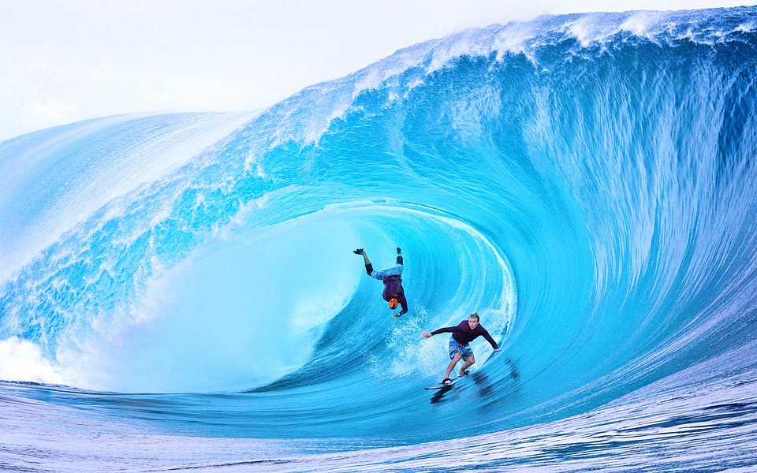

Big wave surfing
What is big wave surfing?
Big wave surfing is a discipline within surfing in which experienced surfers paddle into,
or are towed into, waves which are at least 20 feet (6.2 m) high,
on surf boards known as "guns" or towboards
The biggest waves in the world

- Nazaré, Portugal
- Maui, Hawaii
- Tahiti, French Polynesia
- Tasmania, Australia
- Mavericks, California
The biggest waves in the world

In a big wave wipeout, a breaking wave can push surfers down 20 to 50 feet (6.2 m to 15.5 m) below the surface.
Once they stop spinning around, they have to quickly regain their equilibrium and figure out which way is up.
Surfers may have less than 20 seconds to get to the surface before the next wave hits them. Additionally,
the water pressure at a depth of 20 to 50 feet can be strong enough to rupture one's eardrums.
Strong currents and water action at those depths can also slam a surfer into a reef or the ocean floor, which can result in severe injuries or even death.
One of the greatest dangers is the risk of being held underwater by two or more consecutive waves.
Surviving a triple hold-down is extremely difficult, and surfers must be prepared to cope with these situations.